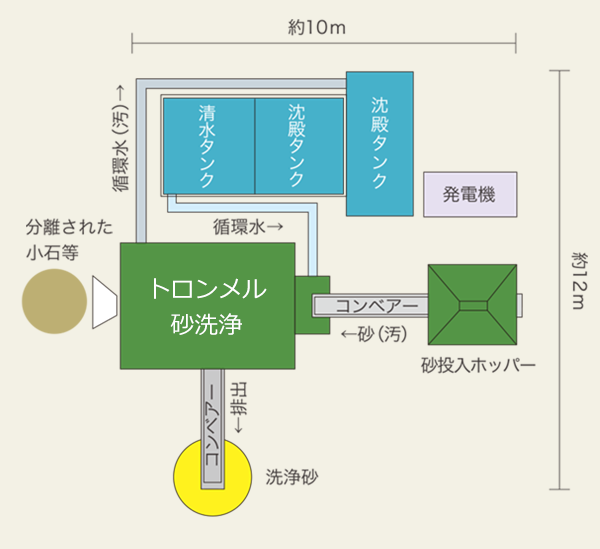

バンカー砂を洗浄することで、オープン当初のサンドバンカーによみがえります。
製品の特長
- 1-環境にやさしい
-
-
貴重なバンカー砂の購入を極限まで抑えられるため、資源の保全に寄与します。
-
砂洗浄は水の循環再利用を徹底した、節水型の洗浄方法を採用しています。
-
洗浄による廃棄物（小石、シルト等）は場内での再利用が可能です。
-
砂採取や運搬に伴う燃料低減によりCO2 の削減が出来ます。
- 2-経済性が高い
-
-
購入砂と比べ材料費、運搬費及び産業廃棄物処理費が低減され経済的です。
※バンカー砂は貴重なため、探す手間や高額な購入費用がかかります。また、入れ替える既存の砂は、産業廃棄物として処理しなくてはなりません。
-
大規模な設備投資が不要となります。
-
バンカー機能の維持管理費用が低減されます。
- 3-現地で手軽に洗浄
-
-
サンドウォッシュマシーンを現地へ運び込み少人数での洗浄作業が可能です。
効果
-
バンカー砂の美しさが復元されます。 中国砂
-
サンドバンカー本来の機能が回復します。
-
環境配慮への取り組みをアピールできます。
効果画像
システム概要
- 1-環境にやさしい
-
-
約10m×12mのスペースが必要となりますが、
現地の作業スペースに合わせてシステムを設置いたします。
- 2-能力
-
-
-
洗浄能力15 ～ 20m3/8ｈ（1日）
-
砂の回収率85 ～ 90％
※10～15％程度の補充砂が必要です。
- 3-支給材
-
- サンドウォッシュマシーンシステム概要図
- 
バンカー再生工法の画像
今まで廃棄物として処理していた古いバンカー砂を再生し、資源を無駄にしないエココンシャスなバンカー再生の新しい技術です。